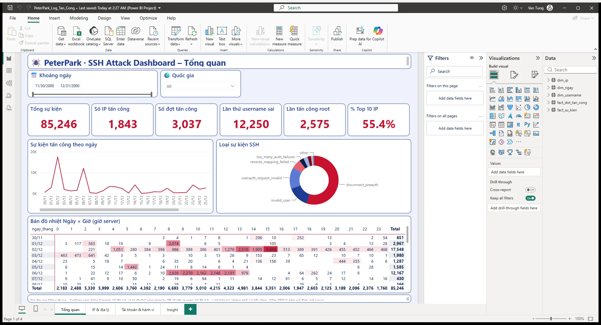
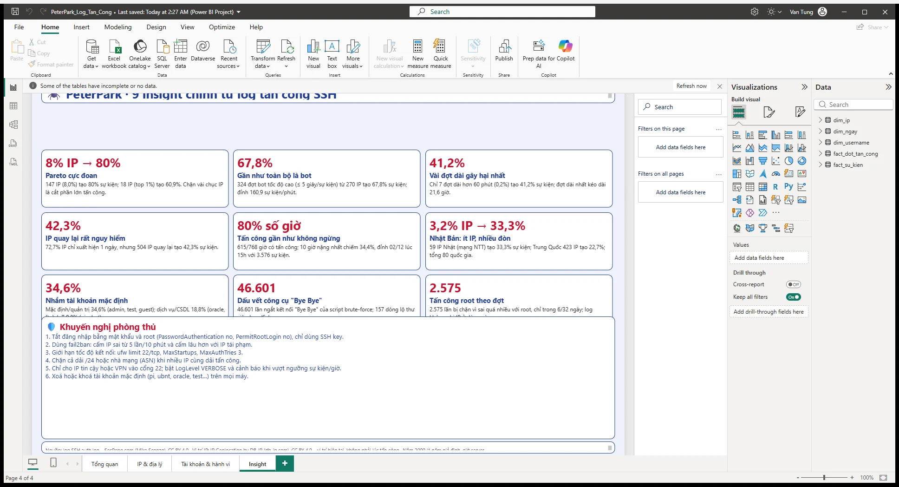
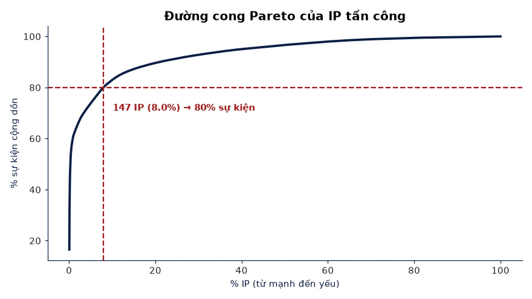
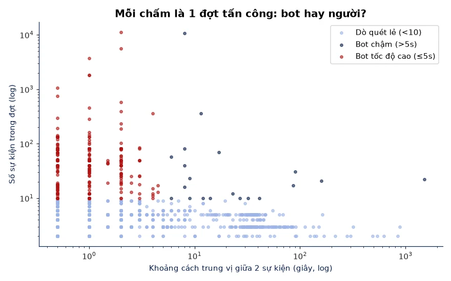

📊 Xử lý dữ liệu
Mình dùng Python, SQL và Power BI để biến dữ liệu thô thành câu trả lời rõ ràng. Dự án nổi bật: phân tích log tấn công SSH thật của một máy chủ Linux.
PythonSQLPower BIAn ninh mạng
🕷️ Phân tích log tấn công SSH
Đọc 86.839 dòng auth.log công khai (SecRepo, 30/11 – 31/12) bằng regex, truy vấn SQLite, vẽ 14 biểu đồ và dựng dashboard Power BI 4 trang có slicer cùng trang Insight. Mục tiêu: tìm ra ai tấn công, khi nào, dò tài khoản gì và nên phòng thủ ra sao.
1.843IP tấn công khác nhau
8% → 80%147 IP gây 80% sự kiện
67,8%Sự kiện do bot tốc độ cao
80%Số giờ trong tháng bị tấn công




Dự án
| Dự án | Công nghệ | Mô tả | Trạng thái |
|---|---|---|---|
| Phân tích log tấn công SSH | Python, SQL, Power BI | Regex parse log, 8 truy vấn SQL, 14 biểu đồ, dashboard 4 trang | Hoàn thành |
| ASM2 – Quản lý nhân viên | Python OOP, TXT/CSV | Thêm, sửa, xóa, sắp xếp, tính thuế thu nhập | Hoàn thành |
Dữ liệu: SecRepo auth.log của Mike Sconzo (CC BY 4.0). Vị trí IP: DB-IP Lite (CC BY 4.0).